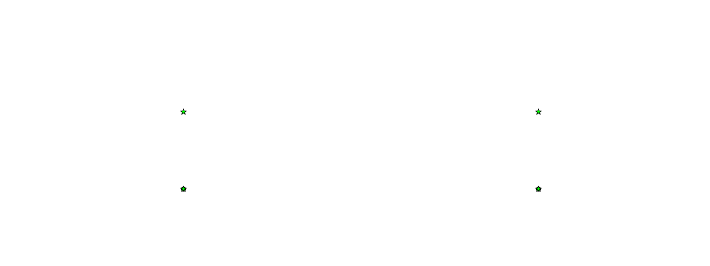
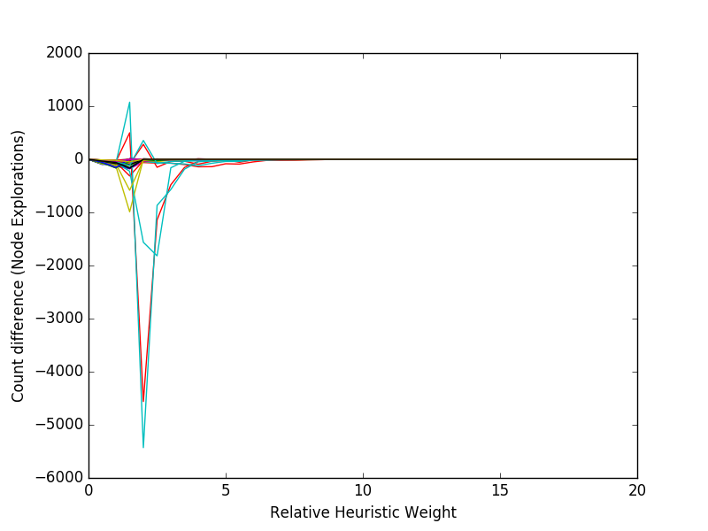
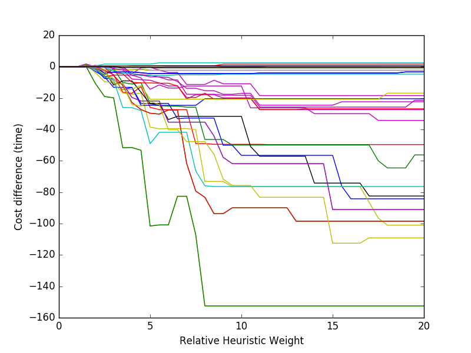

ROUTE VISION¶
Mark Weiss
MOTIVATION¶
- A* costs grow geometrically
- Hierarchal methods cannot dynamically update edge weights
A* GIF
Image of heading into traffic jam
LEVEL SETS & FFM¶
- Level Sets and FFM can be used for path finding
- But they do not solve the computation time problem we need to address
Some sweet level set figures
SOLUTION¶
- Can we embed computationally inexpensive & latent local data in our graph to communicate information.
- This gives A* the potential to reduce cost by behaing intelligently without giving up the robustness that makes it viable
SCALAR¶
- Math
SCALAR COMPARISON¶
- Slow Zone
- Uniform field with embedded homogenous zone(1/10 velocity) and linear deceleration on boundary
{kind=link}
Finding best route with optimal heuristic weighting around obstacle requires double the explorations without embedded scalar field!
| Method | A* | A* with embedded scalar field |
- Harmonic Profile
- Variable velocity field (min at 10 % Vmax)
{kind=link}
{kind=link}
| Method | A* | A* with embedded scalar field |
Scalar stability & Robustness¶
- Cost bounds
- Cycle behavior
Figures that are hard to understand
Note the spike is due to relative weighting (See appendix tables)
 {kind=link}
{kind=link}
Table that is easy to understand
Movies of a few examples
Vector¶
- Math - kernel I just made
- Image of Kernel
Vector Comparison¶
Future Work¶
- Apply with kernel smoothing instead of convolution
- Parameter grid search
Appendix¶
Count Delta
| Weight | 0.0 | 0.5 | 1.0 | 1.5 | 2.0 | 2.5 | 3.0 | 3.5 | 4.0 | 4.5 | 5.0 | 5.5 | 6.0 | 6.5 | 7.0 | 7.5 | 8.0 | 8.5 | 9.0 | 9.5 | 10.0 | 10.5 | 11.0 | 11.5 | 12.0 | 12.5 | 13.0 | 13.5 | 14.0 | 14.5 | 15.0 | 15.5 | 16.0 | 16.5 | 17.0 | 17.5 | 18.0 | 18.5 | 19.0 | 19.5 | 20.0 |
|---|---|---|---|---|---|---|---|---|---|---|---|---|---|---|---|---|---|---|---|---|---|---|---|---|---|---|---|---|---|---|---|---|---|---|---|---|---|---|---|---|---|
| ((1, 48), (20, 28)) | 0 | -35 | -43 | 499 | -4561 | -1142 | -480 | -153 | -40 | -29 | -29 | -20 | -12 | -15 | -6 | -5 | -3 | 0 | 0 | 2 | 2 | 2 | 2 | 3 | 3 | 3 | 3 | 3 | 3 | 3 | 3 | 3 | 3 | 3 | 3 | 3 | 3 | 3 | 3 | 3 | 3 |
| ((48, 1), (20, 28)) | 0 | -42 | -70 | 1076 | -5430 | -868 | -569 | -185 | -46 | -31 | -22 | -13 | -5 | -11 | -8 | -6 | -4 | -2 | -1 | 2 | 2 | 2 | 2 | 3 | 3 | 3 | 3 | 3 | 3 | 3 | 3 | 3 | 3 | 3 | 3 | 3 | 3 | 3 | 3 | 3 | 3 |
Cost Delta
| Weight | 0.0 | 0.5 | 1.0 | 1.5 | 2.0 | 2.5 | 3.0 | 3.5 | 4.0 | 4.5 | 5.0 | 5.5 | 6.0 | 6.5 | 7.0 | 7.5 | 8.0 | 8.5 | 9.0 | 9.5 | 10.0 | 10.5 | 11.0 | 11.5 | 12.0 | 12.5 | 13.0 | 13.5 | 14.0 | 14.5 | 15.0 | 15.5 | 16.0 | 16.5 | 17.0 | 17.5 | 18.0 | 18.5 | 19.0 | 19.5 | 20.0 |
|---|---|---|---|---|---|---|---|---|---|---|---|---|---|---|---|---|---|---|---|---|---|---|---|---|---|---|---|---|---|---|---|---|---|---|---|---|---|---|---|---|---|
| ((1, 48), (20, 28)) | 0 | 0 | 0 | 0 | 0 | -2.43341 | -5.12179 | -16.358 | -16.9607 | -12.7225 | -25.9147 | -27.3847 | -27.3847 | -27.3847 | -27.3847 | -49.0232 | -49.0232 | -49.4729 | -49.4729 | -49.4729 | -49.4729 | -49.4729 | -49.4729 | -49.66 | -49.66 | -49.66 | -49.66 | -49.66 | -49.66 | -49.66 | -49.66 | -49.66 | -49.66 | -49.66 | -49.66 | -49.66 | -49.66 | -49.66 | -49.66 | -49.66 | -49.66 |
| ((48, 1), (20, 28)) | 0 | 0 | 0 | 0 | -1.46284 | -6.37197 | -8.67401 | -26.0156 | -26.1423 | -27.9206 | -49.066 | -41.8309 | -41.8309 | -41.8309 | -41.8309 | -66.4726 | -75.9175 | -76.3945 | -76.3945 | -76.3945 | -76.3945 | -76.3945 | -76.3945 | -76.4029 | -76.4029 | -76.4029 | -76.4029 | -76.4029 | -76.4029 | -76.4029 | -76.4029 | -76.4029 | -76.4029 | -76.4029 | -76.4029 | -76.4029 | -76.4029 | -76.4029 | -76.4029 | -76.4029 | -76.4029 |